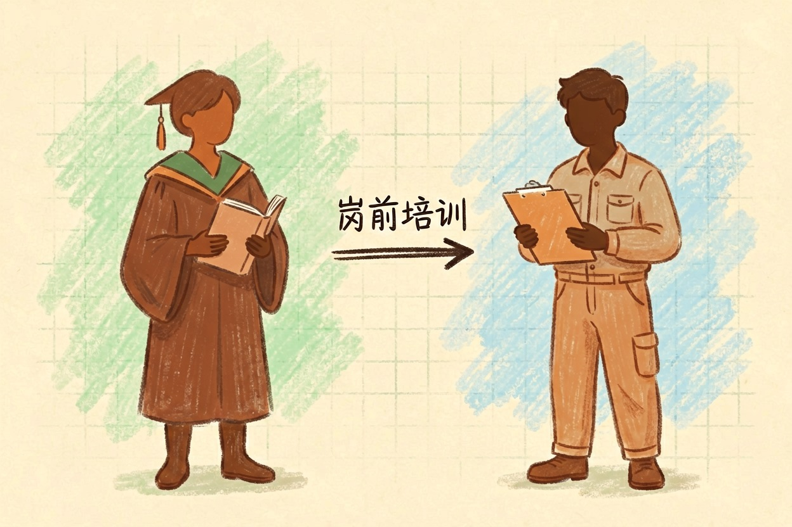
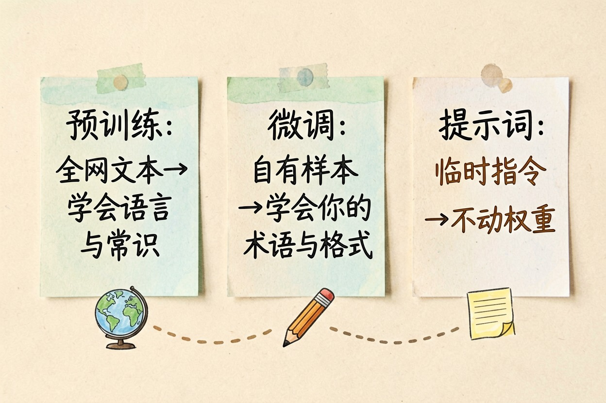
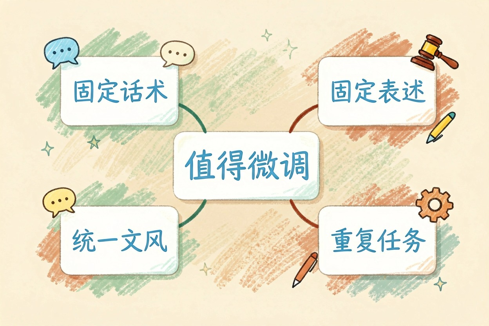
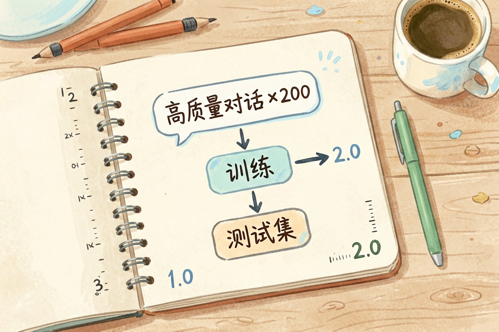
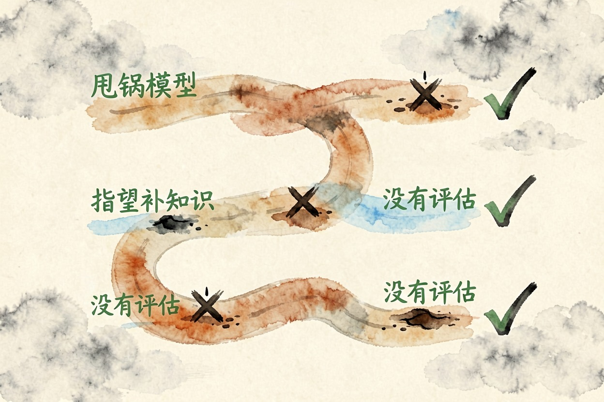

微调是什么：用你自己的数据让大模型学得更像你 — Learntide
你喂给大模型的那点资料，和它在出厂前吃过的海量文本比起来，连九牛一毛都算不上。
微调是什么：给通用模型做一次定向补课

微调是什么？一句话，拿一个已经训好的通用大模型，再用自己的数据喂它一轮，让它的语气和知识倾向往你这边靠。出厂前那一轮叫预训练，吃的是全网文本。微调吃的是你亲手挑过的样本。
打个比方。预训练像把一个人从识字教到毕业。微调像入职后的岗前培训。人还是那个人，只是说话口径换了。多数微调是在别人铺好的地基上做精装修。想先补底层概念，可以看 大模型是什么。
微调和预训练差在哪

差三件事：数据量、成本、目的。
预训练要海量语料，上千张卡跑几个月，只有大厂扛得住。微调只要几百到几万条样本。几张卡、几天就能看出变化。前者教模型学会说话，后者教它学会你的说法。
预训练：全网文本 → 学会语言与常识（周期按月计，投入极重）
微调： 自有样本 → 学会你的术语与格式（周期按天计，投入轻得多）
提示词：临时指令 → 不动权重，随时可改，成本最低还有一个更省事的选项，叫检索增强。只是想让模型「知道」公司文档，接 RAG 是什么 往往比微调划算。资料更新了，改索引就行，不用重训。
什么情况才真的值得微调

多数人用不上。真正该上微调的，是对输出格式和语气要求很死的场景。
- 客服要固定话术，一个字都不能飘
- 法务要固定表述，措辞有硬约束
- 品牌内容要统一文风，换人写就露馅
- 任务高度重复，提示词越写越长，调用成本压不下来
判断标准很朴素。要求已经写进提示词，反复调了十几版还是不稳，就该考虑微调。换个说法就能解决的，问题多半不在模型身上。
还有一种情况值得算账。调用量特别大时，把冗长的提示词固化进模型，能省下重复输入的开销。量不大就别折腾。样本长短会直接影响费用，token 是什么意思 这篇能帮你估账。
小团队能上手的轻量做法

现在主流是轻量适配，只训一小部分参数，显存占用降下来不少。消费级显卡也跑得动，可选的开源底座同样很多。
先准备样本。两三百条高质量对话，胜过三万条凑数数据。格式要统一，答案就写成你希望模型输出的样子。再留一小份测试集，训完拿它做对比。
版本也要记。哪批数据、训了多久、效果如何，都写下来。样本脏，模型就学歪。数据质量比数量更要命。
动手前先绕开这几个坑

最常见的误区是把锅甩给模型。答非所问，多半是提示词没写清、资料没接上。这种情况下动手，等于白烧一轮算力。
第二个坑，指望微调补知识。它擅长学风格和格式，记事实并不牢。要补新知识就上检索，要锁定腔调才上微调。
第三个坑，没有评估。开训之前先定一个能打分的指标，比如格式合规率、人工抽检通过率。没有对照组，你永远说不清这一轮到底变好没有。
别一上来就动权重。先把提示词和资料这两层理顺，再回头判断微调是什么、值不值得为它掏这笔钱。
本文信息核对于 2026-08-08。AI 产品的价格、免费额度与功能变动频繁，实际以各工具官网当前说明为准。